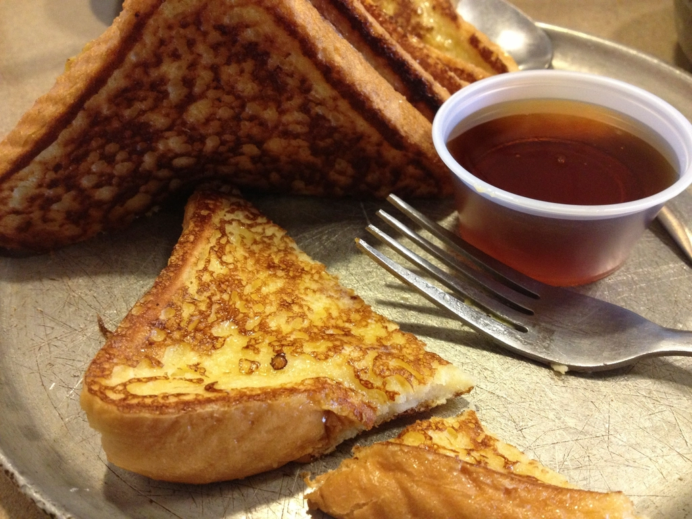
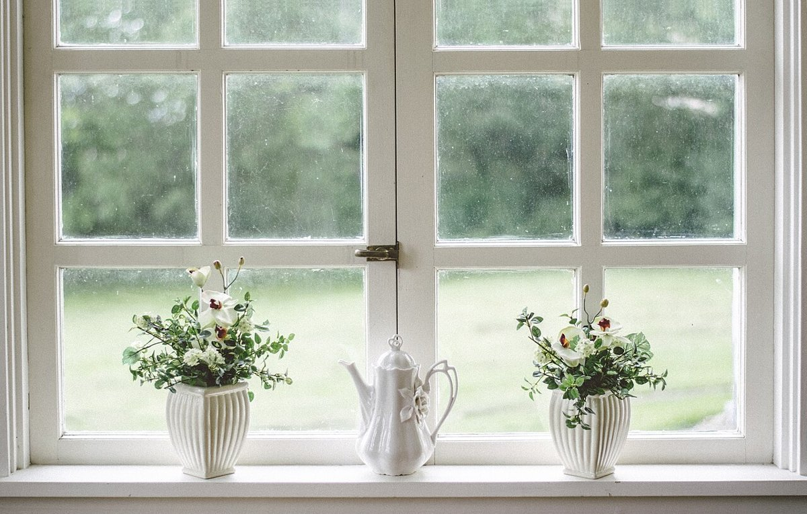
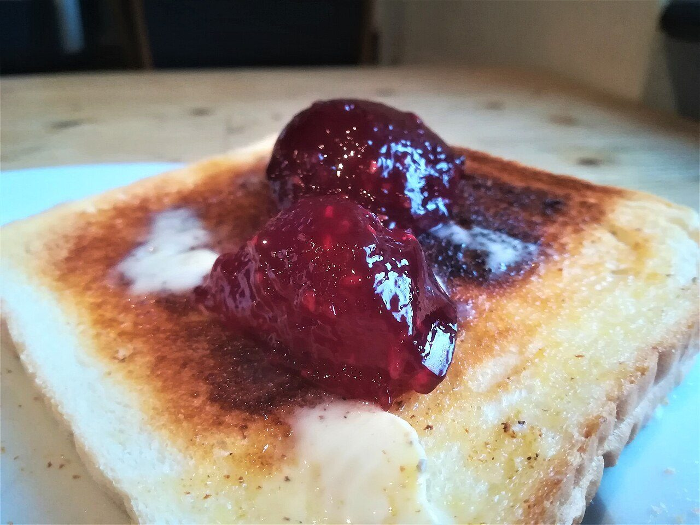
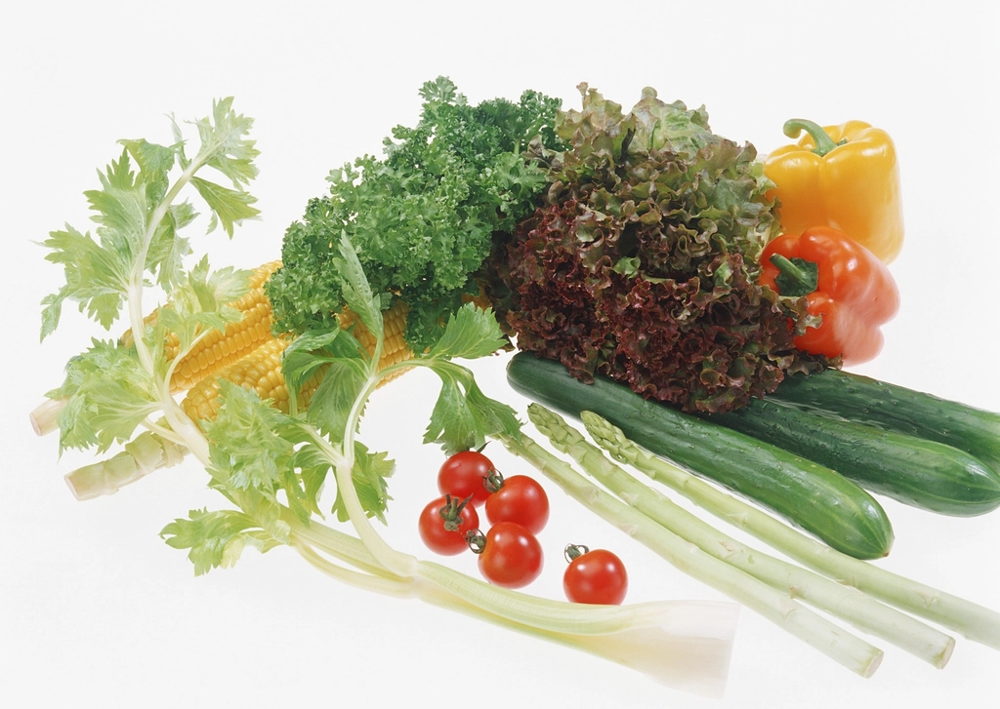
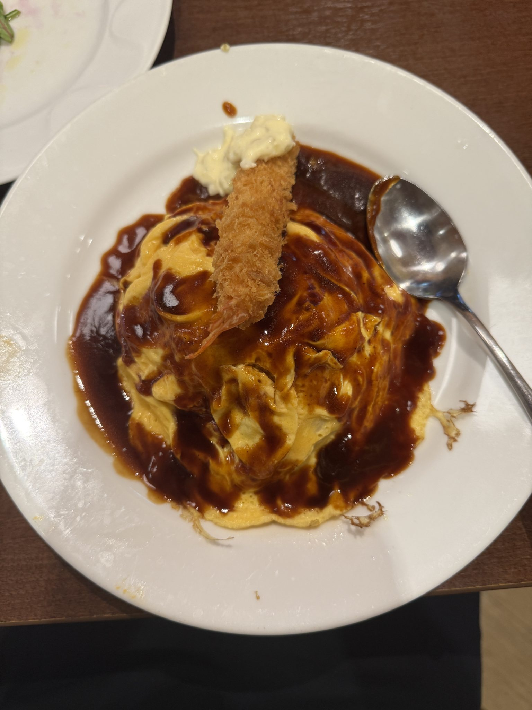
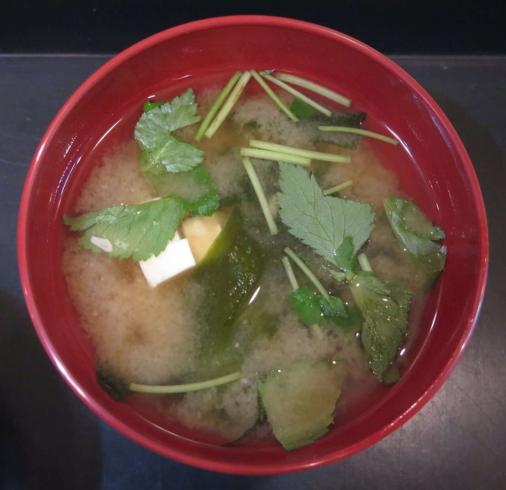
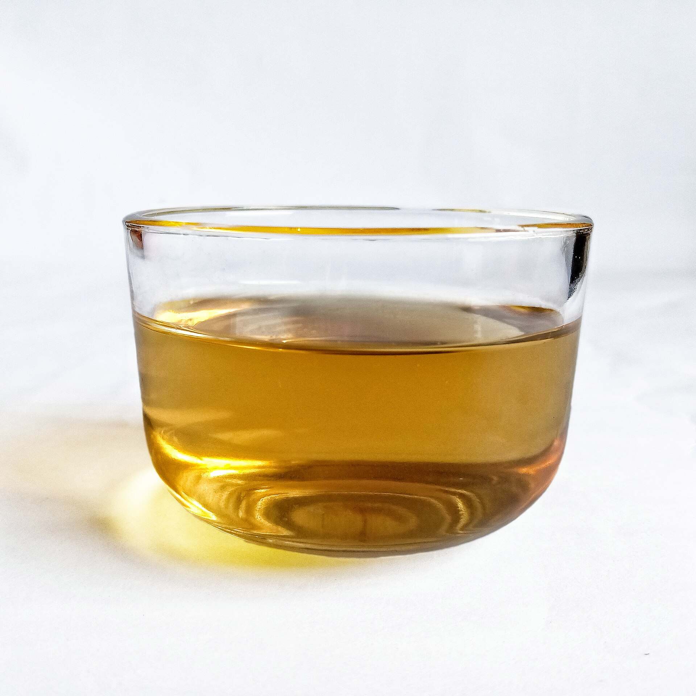

モーニング
フレンチトーストかトーストを選べる朝のセットと紹介されています。価格: 準備中

岡山市北区内山下・半地下のカフェ
宮沢賢治『銀河鉄道の夜』の登場人物に由来する名前を持つ、県庁通り近くの小さなカフェ。ひと駅ぶんの寄り道を、ここで。
お店の由来・想い
紹介記事によると、カンパネラは2022年5月に岡山市北区内山下でオープンしたカフェです。県庁通りから北へ約50mの半地下にあり、かつては画廊喫茶だった場所だとされています。店名は、宮沢賢治の童話『銀河鉄道の夜』の登場人物に由来すると、店主から説明があったと紹介されています。
店内はレンガ敷きの床と白い壁、水色のラインが特徴で、奥には飾り窓があります。席の間にゆとりがあり、アンティーク調の家具とストーブがある落ち着いた空間と紹介されています。お店は、娘さんとそのお母さまの2人で営まれていると紹介されています。
情報源: ごーがい(2022年の紹介記事)/紹介ブログ/食べログ(開店日の記載)/Instagram
店名の意味づけの先にある解釈(見出しの言い回しなど)は制作側のイメージです。情報は紹介記事の時点のもので、現在と異なる場合があります。
メニュー
紹介記事では、朝のモーニング、週替わりのランチ、テイクアウトがあると紹介されています。写真はいずれもフリー素材のイメージで、お店の料理そのものではありません。価格・内容は変更されることがあるため「準備中」としています。

フレンチトーストかトーストを選べる朝のセットと紹介されています。価格: 準備中

モーニングに自家製ジャムのヨーグルトが付くと紹介されています。価格: 準備中

モーニングに自家製サラダチキンが付くと紹介されています。価格: 準備中

肉料理か魚料理のランチセットのほか、オムライスなどが紹介されています。価格: 準備中

モーニングに追加できる季節のスープがあると紹介されています。価格: 準備中

モーニングのドリンクをスムージーに変更できると紹介されています。価格: 準備中

漢方茶や紅茶があると紹介されています。価格: 準備中

コーヒーも紹介されています。豆・淹れ方の詳細: 準備中


口コミ(イメージ例)
以下は制作側が作った「イメージ例」で、実在のお客様の声ではありません。
階段をおりると、思ったより明るくて静かな店内でした。朝のフレンチトーストでゆっくり一日が始まりました。
レンガの床と白い壁が落ち着きます。お昼のごはんもほっとする味で、また寄りたくなりました。
県庁の近くで、ひとりでも入りやすい雰囲気でした。温かい飲み物と一緒に、ひと息つけました。
アクセス・ご案内
| 所在地 | 〒700-0824 岡山県岡山市北区内山下２丁目５−１６ |
|---|---|
| 電話 | 準備中 |
| 営業時間 | 準備中 |
| 定休日 | 準備中 |
| SNS | Instagram @gocampanellago_2022 |
営業時間・メニュー・価格は変更されることがあるため、掲載せず「準備中」としています。最新情報はInstagramをご覧ください。